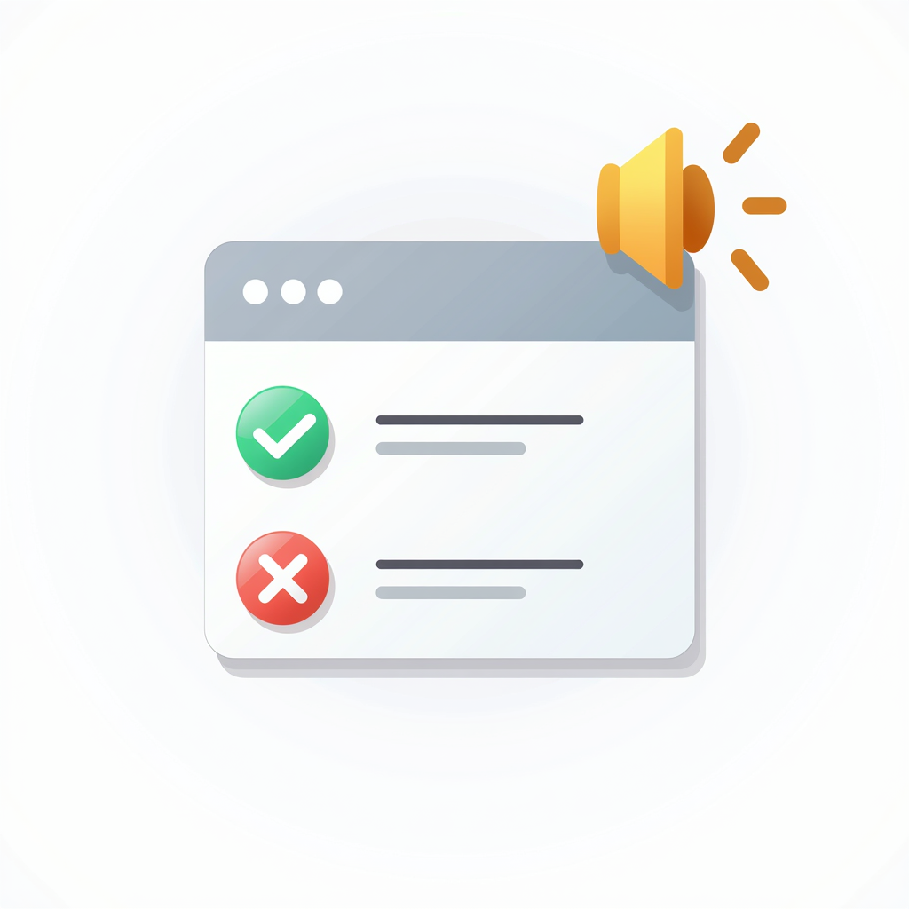
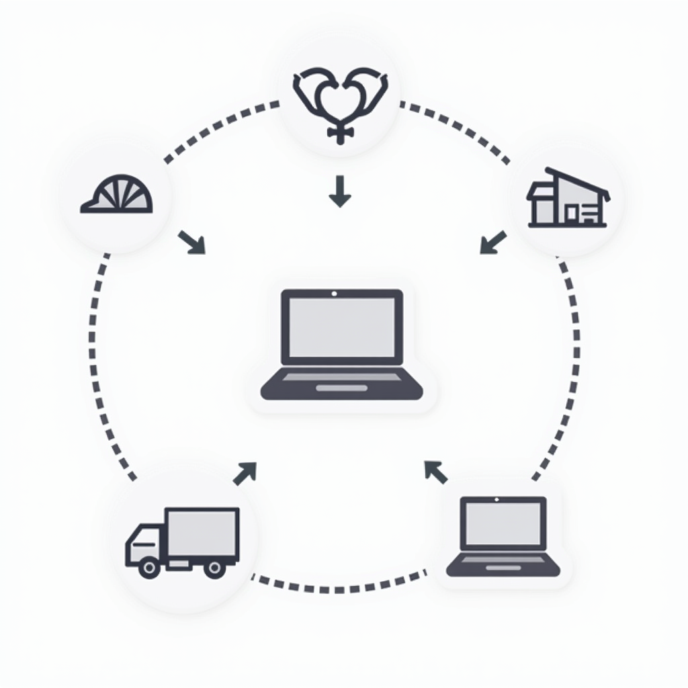

Performance Insights
Measure and analyze your people’s productivity effortlessly. With performance insights, get detailed reports on employee activities, task completion times, and overall efficiency metrics. Use this information to reward achievements and identify areas for improvement.

Alerts and Notifications
Never miss a critical update. Get instant alerts for missed check-ins, route deviations, or any unusual activity. Notifications help managers respond quickly and keep everything running smoothly, minimizing delays and ensuring safety.
Centralized Data and Reports
All your tracking data in one place! Access a clean, centralized dashboard with easy-to-read reports that summarize attendance, locations, and activities. This allows for efficient planning, compliance tracking, and decision-making.
Enhanced Privacy & Security
People tracking shouldn’t compromise privacy. With robust data protection protocols, ensure that sensitive information like employee locations, attendance records, and performance metrics remains secure. This builds trust with your team while meeting compliance requirements.

Benefits in Diverse Industries
From logistics to healthcare, construction to remote work, People Tracking adds value everywhere. Streamline project timelines in construction, manage fleets in logistics, and keep remote teams aligned—all with a single, intuitive platform tailored for your industry’s needs.

Case Studies That Speak Results
See the success stories of businesses that have adopted our People Tracking solution. Learn how companies increased productivity, reduced costs, and streamlined workflows by integrating real-time tracking into their operations.